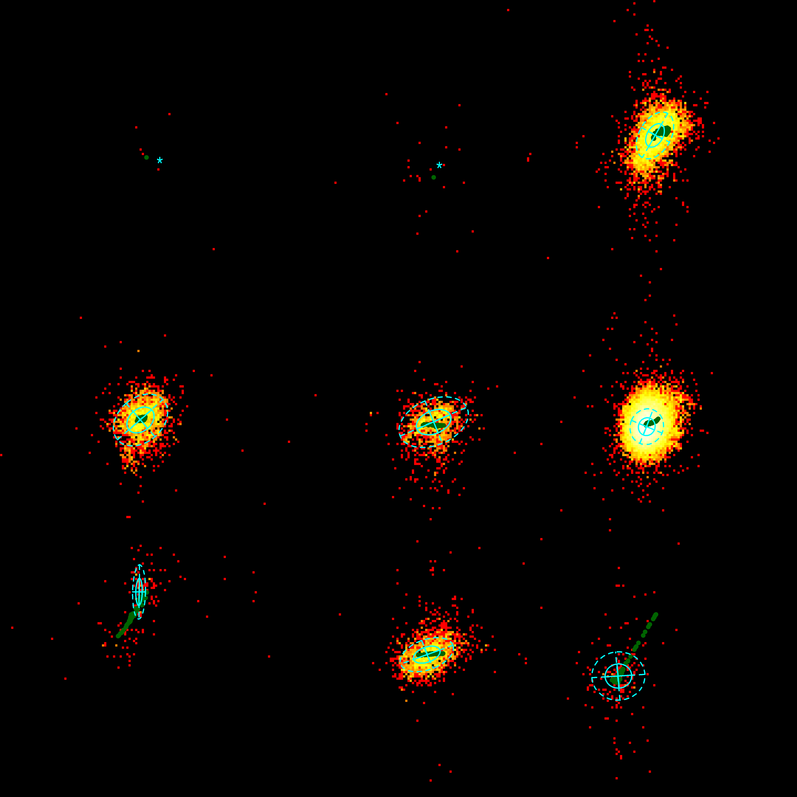
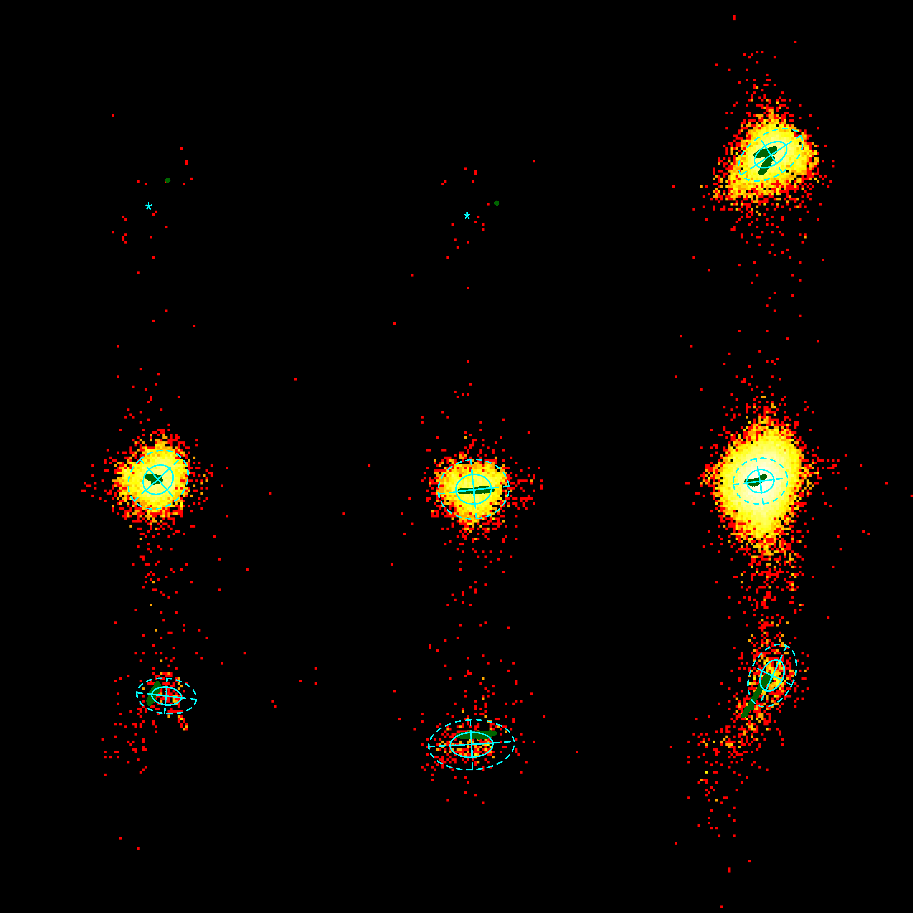
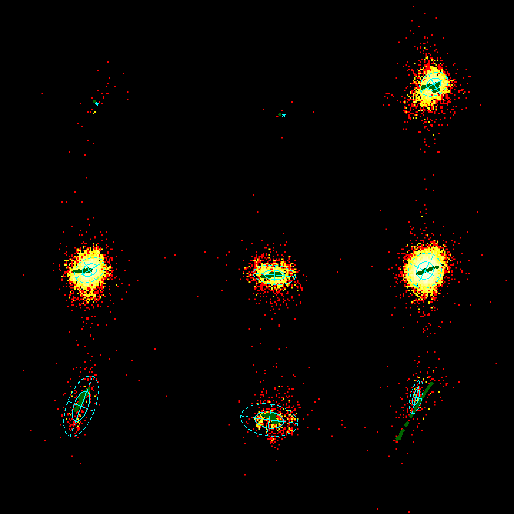
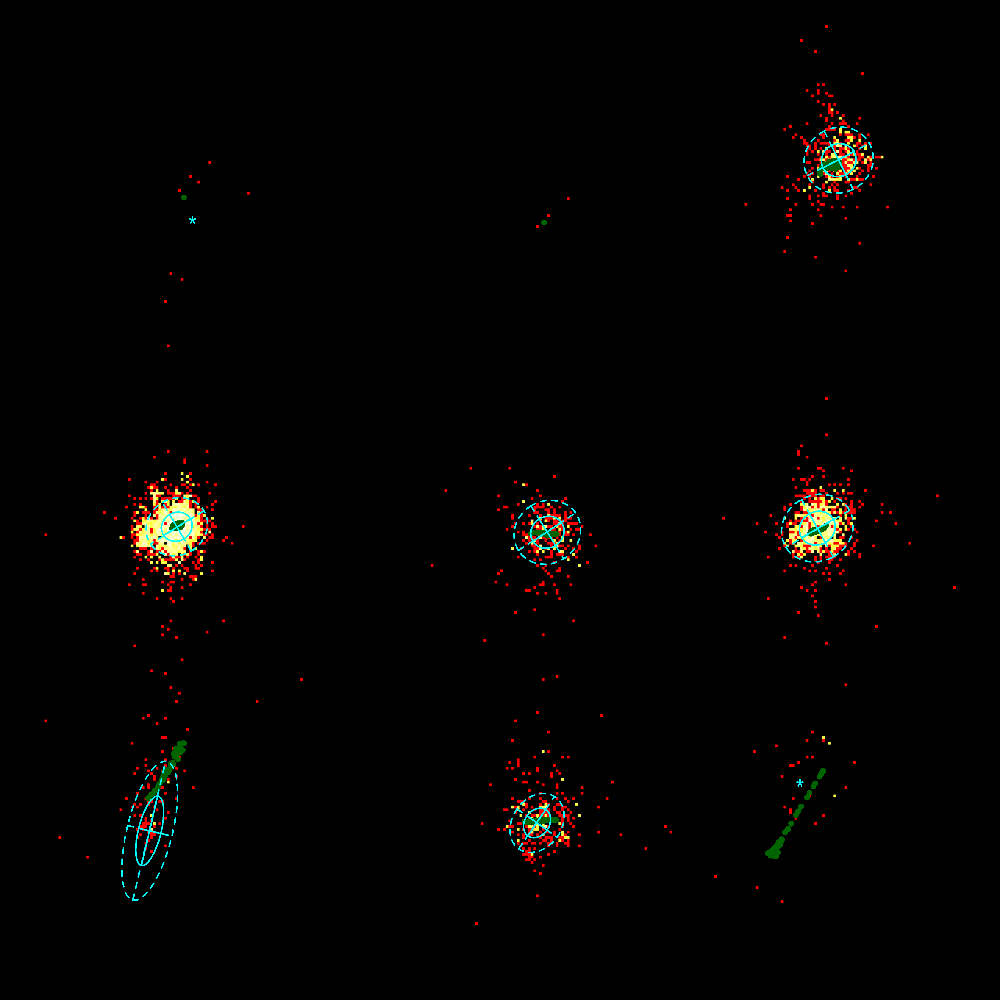
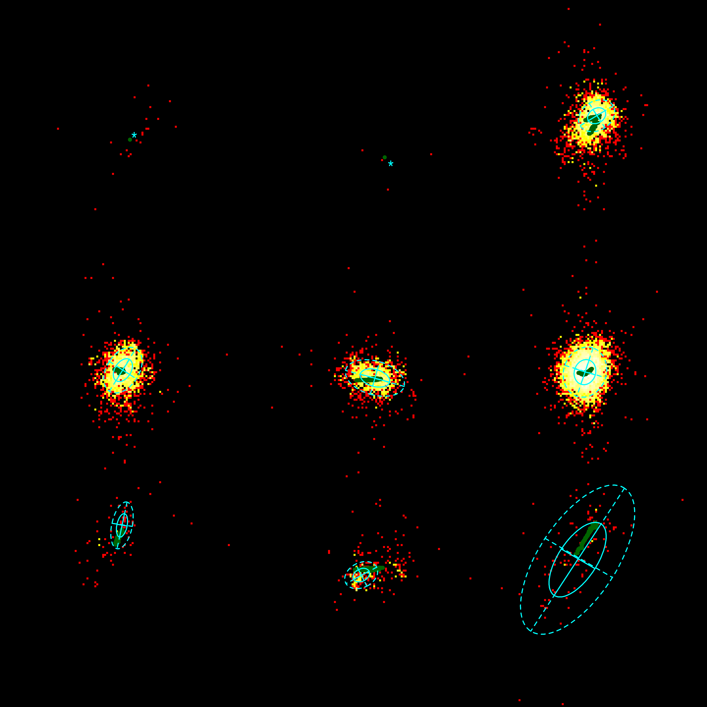
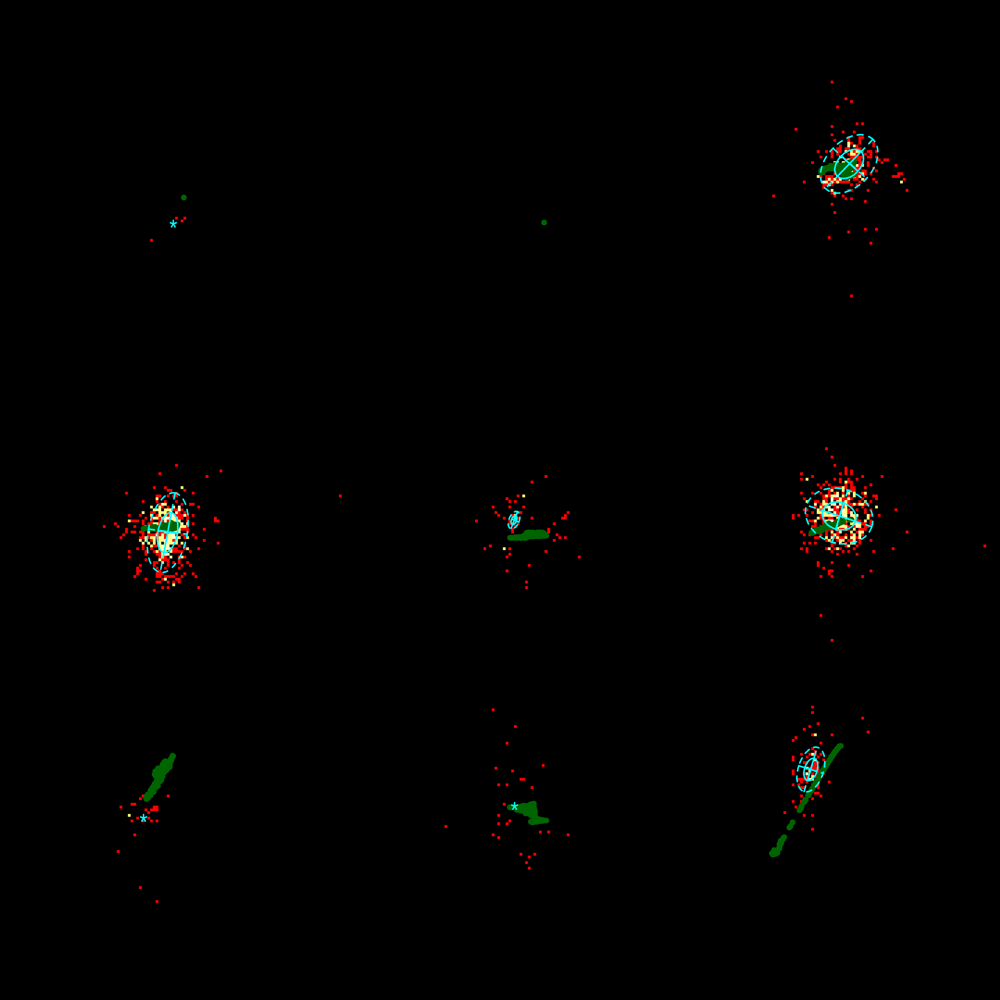

x-axis: χ1, [0,360]
y-axis: χ2, [0,360]
solid dark green points: φ-ψ-dependent values of the Dunbrack Rotamer library1. Based on their φ-ψ angles, their data is seperated into φ-ψ of an α-helix, of a β-strand and rest.
Note that their values are therefore the same for α-helix, β-strand and loop as for φ-ψ angles of an α-helix, β-strand and loop.
solid ellips: 1 standard deviation from the mean
dotted ellips: 2 standard deviations from the mean
'+': fitted mean when at least one standard deviation is greater than 120 degrees
'*': mean when there are less than 50 data points
1) Shapovalov, M.S., and Dunbrack, R.L., Jr. (2011). A smoothed backbone-dependent rotamer library for proteins derived from adaptive kernel density estimates and regressions. Structure, 19, 844-858.
α-helix
β-strand
loop
φ-ψ of an α-helix
φ-ψ of a β-strand
other φ-ψ
